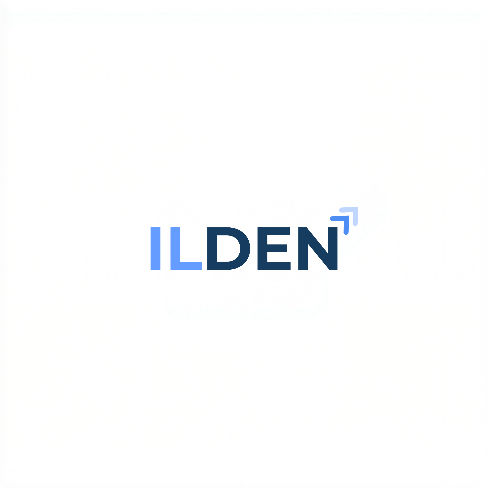

Wie Sie den tatsächlichen Return on Investment von KI-Projekten berechnen — ohne Wunschdenken, mit realistischen Zahlen.
Ich sage es direkt: Die Mehrheit der Business Cases, die mir auf den Tisch kommen, sind zu optimistisch. Nicht weil die Zahlen erfunden wären. Sondern weil systematisch ganze Kostenblöcke fehlen.
In 90% der Business Cases die ich reviewe, fehlt mindestens einer dieser drei Posten: die tatsächlichen Implementierungskosten (nicht nur Lizenzen, sondern Integration, Testing, Schulung), die laufenden Betriebskosten nach Go-Live, oder ein realistischer Zeithorizont für die Umsetzung. Meistens fehlen zwei davon. Manchmal alle drei.
Das ist kein böser Wille. Es liegt daran, dass KI-Projekte anders funktionieren als klassische IT-Projekte. Bei einer ERP-Einführung wissen Sie nach 25 Jahren Branchenerfahrung ziemlich genau, was auf Sie zukommt. Bei KI? Nicht annähernd. Die Technologie ist zu jung, die Variablen zu zahlreich.
Schauen wir uns die Zahlen an. Die durchschnittliche ROI-Prognose in Projektanträgen liegt bei 1,8 Jahren Amortisation. Die tatsächliche Amortisation? 4,2 Jahre. Das hat eine Studie der RAND Corporation aus dem Jahr 2025 ergeben, die 127 KI-Projekte in US-amerikanischen und europäischen Unternehmen untersucht hat.[1]
Aber — und das ist der entscheidende Punkt — wenn die Kalkulation stimmt, wenn Sie die richtigen Prozesse auswählen und die Implementierung sauber durchführen, dann ist ein ROI in unter 9 Monaten absolut realistisch. Ich habe das bei Kundenprojekten wiederholt gesehen. Nicht bei jedem Projekt. Aber bei den richtig geplanten.
Die drei häufigsten Fehler, die ich sehe:
Dieses Whitepaper gibt Ihnen ein Framework an die Hand, mit dem Sie diese Fehler vermeiden. Keine Theorie. Werkzeuge, die Sie morgen einsetzen können.
Jede seriöse ROI-Berechnung für KI-Automatisierung braucht fünf Schritte. Lassen Sie einen weg, und Ihre Kalkulation ist Makulatur. Das klingt streng, aber nach dutzenden Projekten bin ich davon überzeugt: Abkürzungen rächen sich.
Was kostet der manuelle Prozess heute? Nicht grob geschätzt, sondern gemessen. Wie viele Stunden verbringen Ihre Mitarbeiter pro Woche mit der Aufgabe? Was ist der vollständige Stundensatz inklusive Nebenkosten? Wie hoch sind Fehlerkosten, Nacharbeit, Verzögerungen?
Mein Tipp: Messen Sie zwei Wochen lang. Nicht eine. Eine Woche ist zu kurz für belastbare Zahlen. Und lassen Sie die betroffenen Mitarbeiter selbst tracken — nicht deren Vorgesetzte schätzen.
Nicht jeder Prozessschritt lässt sich automatisieren. Die realistische Range liegt bei 25-50% eines typischen Büroprozesses. Wer Ihnen 80% verspricht, hat den Prozess nicht verstanden oder verkauft Ihnen etwas. Laut einer McKinsey-Analyse von 2024 liegt das tatsächlich realisierte Automatisierungspotenzial bei 27% der Arbeitszeit in Büroberufen.[2]
Hier wird es ernst. Entwicklung oder Konfiguration der KI-Lösung ist nur ein Teil. Rechnen Sie mit: Integration in bestehende Systeme, Datenmigration und -aufbereitung, Testphase (mindestens 4-6 Wochen), Schulung der Mitarbeiter, Change Management, und einem Puffer von 20-30% für Unvorhergesehenes.
KI-Systeme sind keine Einmalinstallation. Sie brauchen Hosting oder Cloud-Infrastruktur, Monitoring und Wartung, regelmäßiges Retraining der Modelle (typischerweise quartalsweise), Support für Endanwender, und Updates bei regulatorischen Änderungen.
Die Formel ist einfach. Die Disziplin, sie korrekt zu füllen, ist es nicht.
| Position | Betrag |
|---|---|
| Manuelle Kosten pro Jahr (3 FTE × 65.000 €) | 195.000 € |
| Automatisierungspotenzial (35%) | 68.250 €/Jahr Einsparung |
| Implementierungskosten (einmalig) | 45.000 € |
| Laufende Kosten pro Jahr | 12.000 € |
| Jährlicher Nettoeffekt | 56.250 € |
| Amortisationszeit | 9,6 Monate |
Wenn ich Entscheider frage, welche Einsparungen sie von KI erwarten, höre ich fast immer: Personalkosten. Weniger Mitarbeiter für den gleichen Output. Das ist nicht falsch. Aber es ist nur die halbe Wahrheit.
Die indirekten Einsparungen übertreffen in meiner Erfahrung fast immer die direkten. Das Problem: Sie sind schwerer zu messen. Und was man nicht messen kann, taucht im Business Case nicht auf. Also wird es ignoriert. Das ist ein Fehler.
Diese können Sie relativ leicht beziffern:
Hier wird es spannend — und unterschätzt:
| Kategorie | Direkte Einsparung | Indirekte Einsparung |
|---|---|---|
| Personal | 30% weniger Arbeitsstunden | Höhere Zufriedenheit, weniger Fluktuation |
| Qualität | 80% weniger Fehler | Bessere Kundenwahrnehmung, Markenimage |
| Geschwindigkeit | 5x schnellere Bearbeitung | Kürzere Lieferzeiten, bessere Cash-Cycles |
| Skalierung | — | Wachstum ohne proportionale Kosten |
| Compliance | Weniger Bußgelder | Regulatorische Sicherheit, Vertrauen |
Mein Rat: Beziffern Sie die indirekten Einsparungen nicht bis auf den Cent. Aber ignorieren Sie sie auch nicht. Ein Abschnitt im Business Case mit dem Titel „Qualitative Vorteile" ist besser als Schweigen.
Wie hoch ist der ROI von KI? Die ehrliche Antwort: Es kommt darauf an. Auf die Branche, den Use Case, die Datenlage, die Implementierungsqualität. Trotzdem helfen Benchmarks bei der Einordnung. Hier sind die aktuellsten Zahlen, die ich für belastbar halte.
McKinsey hat 2024 branchenspezifische ROI-Multiplikatoren für KI-Investitionen veröffentlicht.[2] Die Ergebnisse zeigen deutliche Unterschiede:
Quelle: McKinsey Global Institute, „The State of AI in 2024"[2]
Financial Services führt, weil dort drei Faktoren zusammenkommen: hohe Datenqualität, regulatorischer Druck zur Effizienz, und Prozesse, die sich gut formalisieren lassen. Kreditprüfung, Betrugserkennung, Risikobewertung — das sind Aufgaben, für die KI wie geschaffen ist.
Was sagen die deutschen Zahlen? Das Institut der deutschen Wirtschaft (IW Köln) hat ermittelt, dass 63% der deutschen Unternehmen, die KI einsetzen, messbare Verbesserungen in mindestens einem Geschäftsbereich berichten.[5] Das klingt gut. Aber es bedeutet auch: Mehr als ein Drittel sieht keine klaren Verbesserungen. Die Implementierung allein ist kein Garant.
Global betrachtet: Gartner prognostiziert weltweite KI-Ausgaben von 2,52 Billionen US-Dollar für 2026.[6] Das ist kein Hype mehr. Das ist Mainstream-Investition. Unternehmen verdoppeln ihre KI-Budgets — laut BCG von 0,8% des Umsatzes auf 1,7% im Durchschnitt.[7]
Was bedeutet das für Sie? Wenn Ihre Wettbewerber investieren und Sie nicht, entsteht ein kumulativer Nachteil. Nicht sofort. Aber über 2-3 Jahre wird der Produktivitätsunterschied spürbar. Das ist keine Panikmache. Es ist Mathematik.
Hier kommen wir zum unangenehmen Teil. Den Kosten, die in keinem Verkaufsgespräch und in wenigen Beratungspräsentationen auftauchen. Nicht weil sie geheim wären — sondern weil sie unspektakulär sind. Und unbequem.
40-60% des gesamten Projektbudgets. Das ist kein Tippfehler. IBM Research hat 2023 dokumentiert, dass Data Scientists im Durchschnitt 45% ihrer Arbeitszeit mit Datenbereinigung und -aufbereitung verbringen.[8] Ihre Daten sind nie so sauber, wie Sie denken. Duplikate, fehlende Felder, inkonsistente Formate, veraltete Einträge — all das muss behoben werden, bevor ein Modell trainiert werden kann.
Sie haben die beste KI-Lösung der Welt. Niemand nutzt sie. Warum? Weil die Mitarbeiter nicht geschult wurden. Oder weil sie nicht verstehen, warum sich ihre Arbeitsweise ändern soll. Oder weil sie Angst um ihren Job haben. Rechnen Sie mit 10-15% des Projektbudgets für Change Management. Das ist keine Luxusausgabe — es entscheidet über Erfolg oder Misserfolg.
Der EU AI Act ist seit August 2024 in Kraft. Je nach Risikoklasse Ihres KI-Systems brauchen Sie Dokumentation, Audits, Transparenzpflichten. Die Kosten dafür werden regelmäßig vergessen. Für High-Risk-Systeme rechne ich mit 5-10% der Gesamtkosten allein für Compliance-Aufwände. Mehr dazu in unserem separaten Whitepaper zum EU AI Act.
Jedes KI-Modell degradiert über Zeit. Die Daten ändern sich, die Welt ändert sich, das Modell wird ungenauer. Google hat dieses Phänomen „technical debt in machine learning systems" genannt — und es ist real.[9] Planen Sie quartalsweises Retraining und kontinuierliches Monitoring ein. Wer das nicht tut, hat nach 12 Monaten ein System, das schlechtere Ergebnisse liefert als der manuelle Prozess.
Die gute Nachricht: Wenn Sie diese Kosten von Anfang an einplanen, gibt es keine bösen Überraschungen. Und der ROI ist trotzdem positiv — er ist nur realistisch.
Theorie ist gut, Praxis ist besser. Auf der nächsten Seite finden Sie eine Vorlage, die Sie direkt für Ihre eigenen Prozesse nutzen können. Die ersten drei Zeilen sind als Beispiel vorausgefüllt — die restlichen fünf können Sie für Ihre eigenen Prozesse verwenden.
So funktioniert es: Tragen Sie für jeden Prozess die manuellen Stunden pro Woche und den Stundensatz ein. Berechnen Sie die jährlichen Kosten (Stunden × 52 × Stundensatz). Schätzen Sie die Automatisierungsrate konservativ — beginnen Sie mit 25-30%. Die jährliche Einsparung ergibt sich aus den jährlichen Kosten mal der Automatisierungsrate.
| Prozess | Stunden/ Woche | Stundensatz (€) | Jährl. Kosten (€) | Autom.- Rate (%) | Jährl. Einsparung (€) |
|---|---|---|---|---|---|
| Rechnungsverarbeitung | 24 | 55 | 68.640 | 40% | 27.456 |
| E-Mail-Klassifizierung | 15 | 50 | 39.000 | 55% | 21.450 |
| Kundensupport Triage | 30 | 45 | 70.200 | 35% | 24.570 |
| Position | Beispiel | Ihr Wert |
|---|---|---|
| Gesamte jährliche Einsparung | 73.476 € | |
| Implementierungskosten (einmalig) | 42.000 € | |
| Laufende Kosten pro Jahr | 14.400 € | |
| Jährlicher Nettoeffekt | 59.076 € | |
| Net ROI | 1,41x | |
| Amortisationszeit | 8,5 Monate |
ILDEN KI Consulting unterstützt mittelständische Unternehmen bei der
Bewertung, Planung und Umsetzung von KI-Automatisierungsprojekten.
© 2026 ILDEN KI Consulting. Alle Rechte vorbehalten.